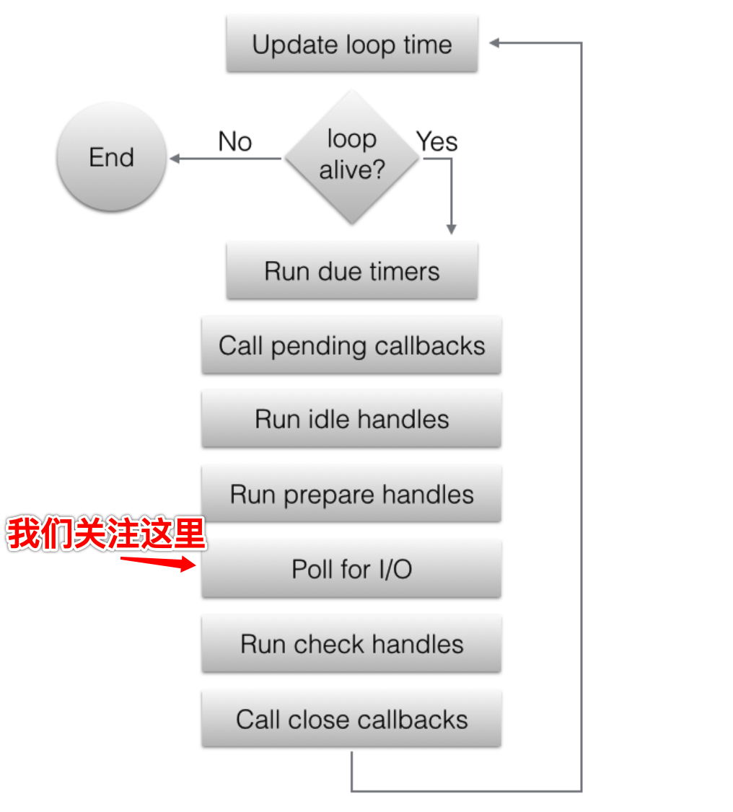

事先声明：本文分析基于nodejs 14版本; 以linux平台为例； [TOC]
本文将分析一个普通的nodejs服务启动和工作的全部过程；将会涉及libuv；
按照nodejs官网上的样例，启动一个服务如下：
const http = require('http');
const hostname = '127.0.0.1';
const port = 3000;
const server = http.createServer((req, res) => {
res.statusCode = 200;
res.setHeader('Content-Type', 'text/plain');
res.end('Hello World');
});
server.listen(port, hostname, () => {
console.log(`Server running at http://${hostname}:${port}/`);
});这里使用了nodejs原生模块http来启动一个服务；
实际上，http模块是调用了nodejs的另外一个原生模块net。那么net启动一个服务，是什么样子呢？我们看下直接使用net启动一个服务的样例：
// 1.引入net
const net = require('net');
// 2.创建一个服务
const server = net.createServer((c) => {
// 'connection' listener.
console.log('client connected');
c.on('end', () => {
console.log('end');
});
c.on('data', () => {
console.log('data event');
c.write('HTTP/1.1 200 OK\r\n');
c.write('Connection: keep-alive\r\n');
c.write('Content-Length: 12\r\n');
c.write('\r\n');
c.write('hello world!');
})
});
server.on('error', (err) => {
throw err;
});
// 3.监听端口
server.listen(9090, () => {
console.log('server bound');
});分析一下过程：
如果有请求到来，则执行第2步中设置的回调函数。
所以，一个普通的nodejs服务，实际上是由net模块来事先的。
接下来我们就看下net模块的主要功能，以及它是如何启动，并处理客户端请求的。
net模块，即/lib/net.js, 就是原生模块，也叫native模块；是由js语言开发的。
net常用的创建服务如下：
// connectionListener就是一个普通的回调函数，负责处理业务逻辑。
const server = net.createServer(connectionListener);在/lib/net.js中，net.createServer代码如下：
function createServer(options, connectionListener) {
return new Server(options, connectionListener);
}可见，createServer是初始化了一个Server的实例。
Server这里是一个构建函数，里面的代码大概50行，但核心主要做了两件事：
这样，一旦有请求事件过来，则执行connectionListener。
那么此时你一定会想知道，请求事件是怎么传过来的呢？从网卡收到tcp数据包，到执行connectionListener，都经历了哪些过程呢？
接下来我们就来详细分析一下。
一个普通的服务启动，无非要经过以下过程
net.js模块也就是干了这些事情；只不过它把所有这些过程都放在了net.js的listen方法中。 那么我们就来分析一下listen。
抽丝剥茧，listen最终调用了new TCP方法，即build-in模块tcp_wrap.cc模块中的void TCPWrap::New方法。
// lib/net.js中createServerHandle函数，大概1218行。
handle = new TCP(TCPConstants.SERVER);（注：js模块，调用c++模块的方法，本文不展开，感兴趣的可以自己搜索。）
new TCP做了啥？
// 调用 TCPWrap; /src/tcp_wrap.cc
new TCPWrap(env, args.This(), provider);new TCPWrap则调用了libuv的uv_tcp_init
int r = uv_tcp_init(env->event_loop(), &handle_);uv_tcp_init是libuv的一个方法。
libuv是一个异步I/O的多平台支持库。当初主要是为了 Node.js而诞生；但它也被用在 Luvit 、 Julia 、 pyuv 和 其他项目 。
libuv全局管理一个handle，即loop，所有的异步处理对象，都会挂载到loop下，以方便需要时，直接从loop下查找。
我们看看uv_tcp_init做了啥：
// 第一个参数，env->event_loop()即使loop对象；
// 第二个参数 &handle是全局唯一的服务对象，是一个uv_tcp_t实例
int r = uv_tcp_init(env->event_loop(), &handle_)uv_tcp_init最终调用了uv_tcp_init_ex(位于/src/deps/uv/src/unix/tcp.c 114行)。
// 由于tcp是基于stream实现的，因此这里先进行初始化
// 位于/src/deps/uv/src/unix/tcp.c 125行
uv__stream_init(loop, (uv_stream_t*)tcp, UV_TCP);uv__stream_init做了啥呢？他先把steam挂载到loop下，然后执行一系列的初始化操作，最终将stream下的观察者进行初始化
// 以下代码片段，从/src/deps/uv/src/unix/stream.c 85行开始
// 把stream挂载到loop下
uv__handle_init(loop, (uv_handle_t*)stream, type);
// 把stream下的一些属性进行初始化赋值
...
// 初始化stream下的观察者
uv__io_init(&stream->io_watcher, uv__stream_io, -1);至此，libuv把初始化操作都做完了。总结一下初始化做了哪些事情：
这里很简单，不做展开
libuv的listen做了很多事情：
至此，nodejs服务启动阶段完成。接下来，我们分析有客户端请求到来时，nodejs服务是如何处理的。
nodejs使用C++开发的。因此nodejs服务，就是一个C++的进程在跑。
这个进程中，只有一个线程。
我们来看下，这个线程都在跑什么代码逻辑。
（当然实际代码逻辑远远超过这些，感兴趣的同学可以自己看下源码。）
可以看到，进程启动起来以后，在不断地调用uv_run，那么uv_run是干啥呢？
// 位于/src/deps/uv/src/unix/core.c
int uv_run(uv_loop_t* loop, uv_run_mode mode) {
int timeout;
int r;
int ran_pending;
r = uv__loop_alive(loop);
if (!r)
uv__update_time(loop);
while (r != 0 && loop->stop_flag == 0) {
uv__update_time(loop);
uv__run_timers(loop);
ran_pending = uv__run_pending(loop);
uv__run_idle(loop);
uv__run_prepare(loop);
timeout = 0;
if ((mode == UV_RUN_ONCE && !ran_pending) || mode == UV_RUN_DEFAULT)
timeout = uv_backend_timeout(loop);
uv__io_poll(loop, timeout);
uv__run_check(loop);
uv__run_closing_handles(loop);
...
}
...
}是不是很熟悉，其实就是libuv官网中的这张图 
我们重点关注uv__io_poll这个阶段，看看它到底是怎么判断【某个请求已经就绪，可以执行回调了】。
uv__io_poll封装了个个平台的差异性（linux下使用epoll， mac下使用kqueue...）。我们一linux的epoll为例。
下面是简要步骤：
uv__io_poll会从loop->watcher_queue中取出一个（上面我们有分析，node服务启动后，会把服务注册到这个队列中，参见“net模块中listen最后调用libuv的listen”）。
取出后，调用epoll的epoll_ctl方法，表示我对这个服务的句柄感兴趣，epoll你帮我盯着。
然后调用epoll的epoll_pwait方法（这里会阻塞一会），拿到已经准备就绪的事件。
最后调用每个服务的回调： w->cb(loop, w, pe->events) （这里的w就是第一步中从watcher_queue中取出来的东西）
w->cb是什么呢？ 其实，它是在服务启动时，调用libuv的uv_tcp_listen时设置的。
// 位于/src/deps/uv/src/unix/tcp.c 363行
tcp->io_watcher.cb = uv__server_io;uv__server_io是stream.c中的一个方法，主要做了以下这件事：
// 位于/src/deps/uv/src/unix/stream.c 564行
stream->connection_cb(stream, err);而这个stream->connection_cb，就是业务开发人员，启动服务时，设定的connectionListener回调，证据：
// 位于/src/deps/uv/src/unix/tcp.c 3359行
// 这个connection_cb，和cb关联了起来。此处的cb，就是业务开发设定的connectionListener
tcp->connection_cb = cb;（注：stream->connection_cb的stream和tcp->connection_cb的tcp是一个东西）。
到此，libuv的uv__io_poll完成了监听网络事件，并调用服务回调的过程。
总结一下：
经过上面的分析，你可能大概了解了一个请求的整个处理过程。但是nodejs服务是可以处理高并发请求的，这又是怎么处理的呢？
带着整个疑问，我们来一一分析。
敬请期待。。。
敬请期待。。。